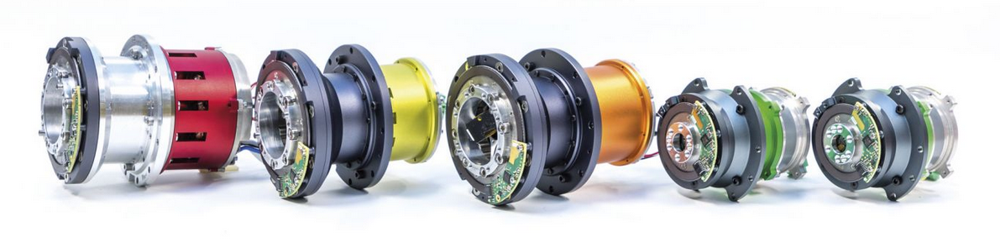
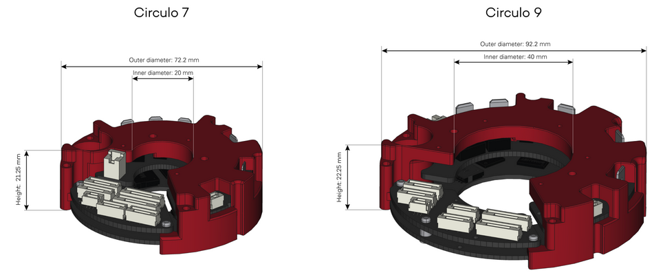
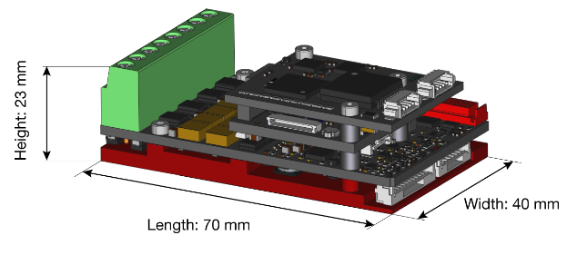

Welcome to ADVR-F EtherCAT Client’s documentation!
EtherCAT Client is an application which different mechanisms and communication protocols to communicate with the ADVR-F EtherCAT Master server:

EtherCAT Server:

It’s possible to compile and run the EtherCAT client and server in real-time with Xenomai and Preempt-RT real-time operating system:
Compatible with different types of motor drivers, IIT HHCM Research Line and Synapticon Somanet Circulo-Node:
  Contents: